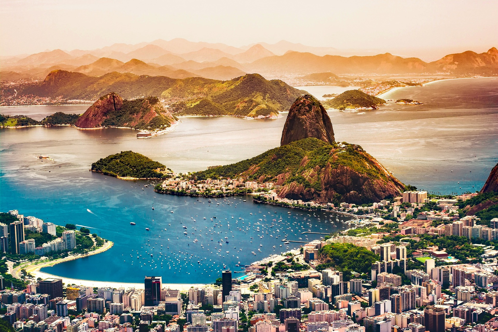

AS 3 CIDADES MAIS CONHECIDAS AO REDOR DO MUNDO!
Rio de janeiro
O Rio de Janeiro, conhecido como a "Cidade Maravilhosa", é uma metrópole vibrante e diversificada que se estende por uma paisagem deslumbrante entre o oceano Atlântico e as montanhas imponentes. Com uma mistura única de belezas naturais, cultura rica e vida urbana agitada, a cidade oferece uma experiência única aos seus habitantes e visitantes. As praias icônicas, como Copacabana e Ipanema, são verdadeiros cartões-postais, onde a areia branca encontra o azul intenso do mar, criando cenários memoráveis para atividades ao ar livre e celebrações. O Cristo Redentor, no alto do morro do Corcovado, observa a cidade de braços abertos, tornando-se um símbolo mundialmente reconhecido do Rio de Janeiro. A arquitetura reflete a história diversificada da cidade, com edifícios coloniais, modernos arranha-céus e favelas pitorescas que se espalham pelas encostas das colinas. Os bairros históricos, como Santa Teresa, exibem charme boêmio com ruas de paralelepípedos, casas coloridas e ateliês de artistas. A música e a dança estão intrinsecamente ligadas à identidade carioca, com o samba sendo o ritmo que embala os corações e os pés dos habitantes. Durante o Carnaval, a cidade ganha vida com desfiles de escolas de samba, blocos de rua e festividades que atraem milhões de pessoas de todo o mundo. A gastronomia carioca é uma delícia para os sentidos, oferecendo uma ampla variedade de pratos que refletem a influência africana, indígena e europeia. Os mercados e restaurantes proporcionam experiências culinárias únicas, desde pratos tradicionais como feijoada até deliciosas opções de frutos do mar. Apesar dos desafios sociais e econômicos, o espírito acolhedor e a alegria contagiante dos cariocas fazem do Rio de Janeiro um lugar único e inesquecível. A cidade é um cenário dinâmico onde a natureza exuberante se mistura harmoniosamente com a energia pulsante da vida urbana, criando um destino que cativa e encanta todos que a visitam.
Londres

Londres, a capital do Reino Unido, é uma cidade vibrante e multifacetada que mescla história, cultura e modernidade de maneira única. Localizada nas margens do rio Tâmisa, Londres é conhecida por seus ícones arquitetônicos impressionantes, como o Palácio de Buckingham, a Torre de Londres, o Big Ben e a Abadia de Westminster. A cidade é um verdadeiro caldeirão cultural, refletindo a diversidade de sua população global. Bairros como Soho, Camden e Notting Hill abrigam uma mistura eclética de lojas, restaurantes, bares e clubes, proporcionando experiências únicas aos visitantes. A cena cultural de Londres é incomparável, com uma infinidade de teatros, galerias de arte, museus de classe mundial, como o Museu Britânico e a Tate Modern, e instituições históricas, como a Biblioteca Britânica. O sistema de transporte público eficiente, incluindo o famoso metrô londrino, torna a cidade acessível e fácil de explorar. Além disso, os parques exuberantes, como o Hyde Park e o Regent's Park, oferecem refúgio verde no coração da metrópole, proporcionando um contraste relaxante em meio à agitação urbana. Londres é um centro financeiro global, com arranha-céus imponentes pontilhando o horizonte, como o Shard e o Canary Wharf. A diversidade econômica e a presença de empresas internacionais contribuem para uma atmosfera dinâmica e inovadora. A gastronomia londrina é uma experiência por si só, com uma variedade de restaurantes que oferecem desde pratos tradicionais britânicos até culinária internacional de alta qualidade. Os mercados de rua, como Borough Market, proporcionam uma experiência sensorial única, repleta de aromas e sabores variados. Em resumo, Londres é uma cidade fascinante, onde o passado e o presente se entrelaçam harmoniosamente, criando um ambiente único e cativante para moradores e visitantes.
Nova York

Nova York, a cidade que nunca dorme, é uma metrópole verdadeiramente magnífica e energética, situada na costa leste dos Estados Unidos. Com uma paisagem urbana inconfundível e uma cultura diversificada, a "Big Apple" é um ícone global em diversos aspectos. Os arranha-céus imponentes, como o Empire State Building, o One World Trade Center e a Ponte do Brooklyn, definem o horizonte de Nova York, criando uma atmosfera única de grandiosidade arquitetônica. Os bairros distintos, como Manhattan, Brooklyn, Queens, Bronx e Staten Island, proporcionam uma rica tapeçaria cultural, cada um com sua própria identidade e charme. A vida cultural de Nova York é incomparável, abrigando algumas das instituições artísticas mais prestigiadas do mundo. O Metropolitan Museum of Art, o Museu de Arte Moderna (MoMA) e a Broadway são apenas alguns exemplos do rico cenário cultural da cidade. Os teatros da Broadway oferecem espetáculos espetaculares que atraem visitantes de todo o mundo, enquanto os parques urbanos, como o Central Park, oferecem um refúgio tranquilo no coração da agitação urbana. A diversidade é a essência de Nova York, refletida não apenas em sua população, mas também em sua culinária. A cidade é um paraíso gastronômico, com uma incrível variedade de restaurantes que oferecem sabores de todas as partes do mundo. Desde os tradicionais hot dogs de rua até os restaurantes sofisticados com estrelas Michelin, há opções para todos os paladares. O sistema de transporte público, incluindo o icônico metrô, torna a cidade facilmente acessível, permitindo que os residentes e visitantes explorem suas diversas atrações. Além disso, a atmosfera pulsante de bairros como Times Square, Greenwich Village e Harlem contribui para a energia inigualável de Nova York. Em suma, Nova York é uma cidade que transcende as expectativas, cativando aqueles que a exploram com sua energia, diversidade, cultura e oportunidades infinitas.
 Github
Github
 Linkedin
Linkedin
 Instagram
Instagram